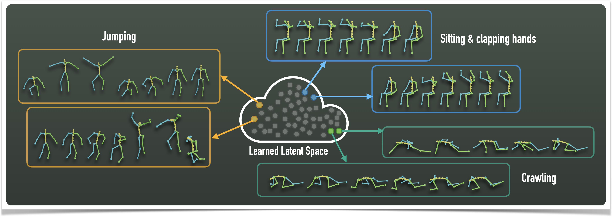
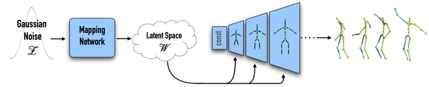

Abstract & Method
We develop a neural technique for articulating 3D characters using enveloping with a pre-defined skeletal structure, which is essential for animating a character with motion capture (mocap) data. Furthermore, we propose neural blend shapes — a set of corrective pose-dependent shapes that are used to address notorious artifacts caused by standard rigging and skinning technique in the joint regions.

Starting with a character model in T-pose, and the joint rotations on the desired skeleton hierarchy, our envelope branch predicts the
corresponding skinning and rigging parameters and deforms the input character using a differential enveloping. In parallel, a residual deformation branch uses the input mesh to predict blend shapes and uses the joint rotations to predict the corresponding blending coefficients. This design also enables the network to be trained by only observing deformed shapes using indirect supervision, with no assumption on the underlying deformation model.

Our network is built upon the MeshCNN operators of Hanocka et al. [2019] and the Skeleton-Aware operators of Aberman et al. [2020], which enables generation of high-quality deformations for arbitrary mesh connectivities.